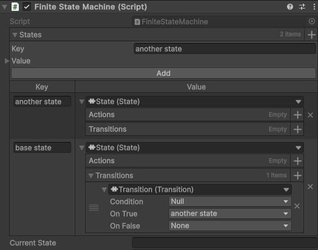
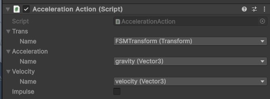
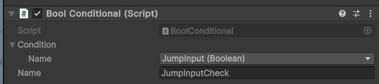

Flexible Finite State Machine
A highly flexible FSM system that allows for high levels of code reuse
This project is the culmination of several game jam systems and inspiration from a few well known finite state machine solutions. As the base system for a finite state machine is extremely simple to build from scratch, this makes it practically ideal for game jams, outside of very specific circumstances. From there, I learned from several mistakes in game jam versions and got some inspiration for how Corgi Engine makes their own finite state machine system, along with lesser inspiration from other commercial systems such as FlowCanvas. The core systems technically use nothing Unity specific, but all actions, transitions, and the finite state machine controller itself are MonoBehaviors for Unity integration.
In a typical YouTube tutorial, finite state machines are usually handled through something along the lines of a switch statement with enums or tightly coupled state logic in several scripts. But both of these have the big downside of inflexibility. It makes creating new behaviors more difficult by extending an increasingly long script and needing to add transitions all throughout the script. Want to add a new state that most states can transition to? Well, now you need to edit the code for most of your states. This can be quite messy to place in the right spot as states get more and more complex. Additionally, it disallows for code reuse, as it makes reusing smaller parts of states much more difficult, especially between distinct agents with separate behavior. They can be put into their own methods and classes, but the struggle of reuse between AI agents remains without substantial effort put in.
Looking into better, more flexible systems brings forth the idea of breaking a state up into a few components. These components are a list of Actions and a list of Transitions. Actions are composed of the actual logic of the state, the actions that the FSM will take in a given frame. Next, the transitions are composed of several components: a condition, a true transition, and a false transition. Both the true and false transitions may or may not exist, but the condition must always exist.

To begin with, there is a centralized controller of the states, usually just called FiniteStateMachine in my projects. It goes without saying that this system controls what state a unit is actively in and handles transitions towards other states. However, it does not handle any of the logic of the state or the conditions.
The FiniteStateMachine stores of dictionary of <string, State> where State holds a list of IStateActions and a list of Transitions. All we meed to do for a state is check for transitions and if there are not any, we runs the actions. It needs to return if a transition is made, as there the state must start fresh.
protected virtual void Update()
{
if (TryToTransition())
return;
UpdateState();
}
As for how state transitions happen, we first need to verify if there is a transition happening in this state and get the state it transitions to. If there is one, we change to the new state. Otherwise, we continue as we were. The simplicity of this core script is a boon for the project, as it means specifying and extending it for any particular needs is extremely easy.
protected virtual protected bool TryToTransition()
{
var state = states[currentState].TryGetNewStateByTransitions();
if (string.IsNullOrEmpty(state))
return false;
ChangeToState(state);
return true;
}
protected virtual void ChangeToState(string state)
{
states[currentState].OnExitState();
states[state].OnEnterState();
currentState = state;
}
Actions use an interface known as IStateAction, which contains the methods for Initialize(), OnStateEnter(), Execute(), and OnStateExit(). These all, of course, activate in the respective section of the finite state machine. Actions are meant to change the state of the game. That is, they allow the state machine to move, attack, defend, or any other action they may need to take. Here is an example where it applies gravity to the character's velocity.

By making the action use an interface, it allows for the system to be fairly software agnostic, allowing it to conceivably be used in other engines like Godot with changes to only the main controller class. Although for the purpose of Unity integration, actions typically inherit from MonoBehaviour or ScriptableObject. This allows for the actions to elegantly have parameters show in the editor without any additional effort.

Transitions use a IStateCondition interface and two strings for the state names. These state names utilize a tool made with Odin Inspector to use a dropdown list to ensure that only states that exist in the object or its parent can be selected. Other than that, IStateCondition shares much of the same design of IStateAction: Initialize(), OnStateEnter(), OnStateExit(), and the only change is CheckCondition() instead of Execute(). Of course, CheckCondition() returns a boolean. The exmaple images of a conditional checks for jump input (which itself is a bool) to return whether the input is true or not.
Because of the design being so system agnostic, it allows for an easy creation of a variety of "compound conditions." These compound conditions reference other IStateConditions This means it is a generic way to check if the target is within range and visible before changing to an attack state, as one small example. These could be checking if one of several conditions are true or if any of them are true, similar to behavior tree selectors and sequences.
This same idea can be applied to actions to allow for a kind of pseudo Hierarchical State Machine system, although it is not created for it. However, when this system is paired with my Data Binding System it does allow for Parallel State Machines that share data with one another but do not ever directly interact.
Overall, this system allows for high levels of flexibility and code reuse by breaking up all states into a series of several smaller actions that run in tandem. It is perfect for games that do not need a more complex system like behavior trees or utility AI.
To see the power of this system in action, please visit my Wall Rider Character Controller page, filled with information on how it works in practice with a video of the code in action.